HELP FIND THE
FOLLOWING MAN IN A SUITCASE LOCATIONS
PAGE 39
MAN
IN A
SUITCASE: Man From The Dead (Pat Jackson: August 1966)
26 Lansdowne Crescent, London W11 -
McGill stakes drives Rachel Tyson back to her flat after he has
interrupted a
possible meeting with her father.
(Identified by Sietse Postma, July 2023)

MAN
IN A
SUITCASE:
Which Way Did He Go,
McGill?
Lawn Road Uxbridge - Keith
Earle (Donald Sutherland) sets
off to find his former colleagues from this street. McGill goes to
interview
Roger Fulton (Tom Criddle)
at his home. Detective Inspector Stoke
(Michael Hawkins) is following the same leads and arrives with his men.
Fulton
gives McGill the slip and drives off.
(Alan Field, October 2009)
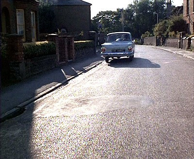
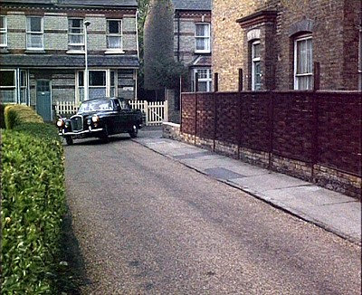


MAN
IN A
SUITCASE:
Variation On A Million
Bucks -
part 1 (Pat Jackson: November 1966)
Avenue
Lodge,
Avenue Road in St John's Wood NW8 - Someone is watching McGill's flat, the
Mansions, Park Street NW1.
(Identified by Wyn
Roberts, confirmed by Geoff Dodd)
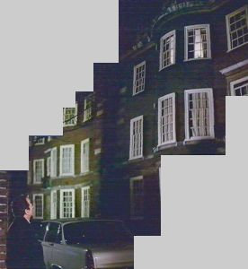
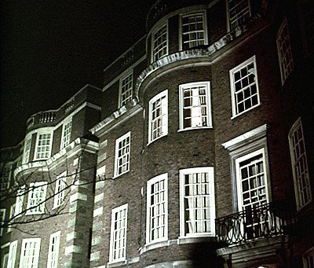
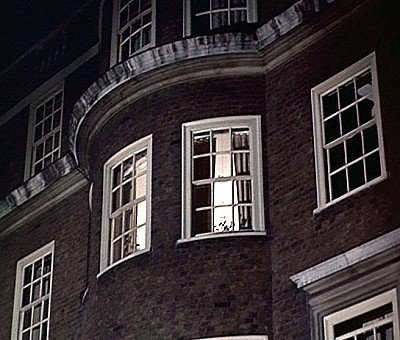
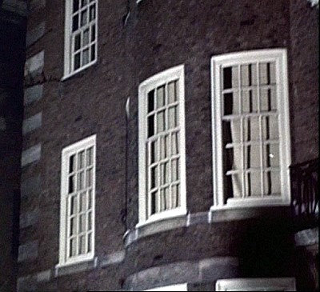
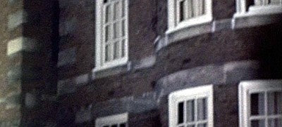
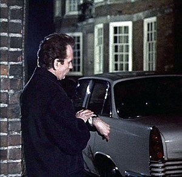
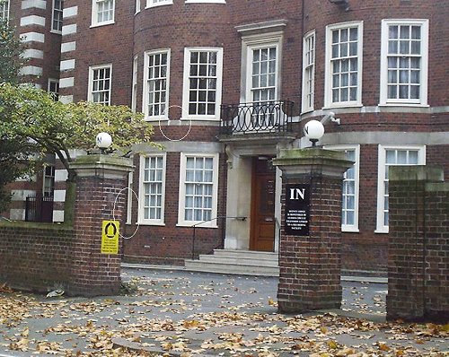

 Wyn
Roberts: Could be Avenue Lodge,
Avenue Road in St John's Wood NW8 (left) or Park
Lodge, St John's Wood
Park (right)
Wyn
Roberts: Could be Avenue Lodge,
Avenue Road in St John's Wood NW8 (left) or Park
Lodge, St John's Wood
Park (right)
Here is how the same
location was recreated in the studio:
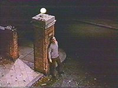
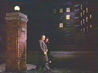
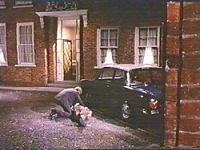
Think you know a spot? Need a bigger image? Email me.
<
Previous
| Index
| Avengerland
| Next >
Copyright ©
2003 Anthony R. McKay